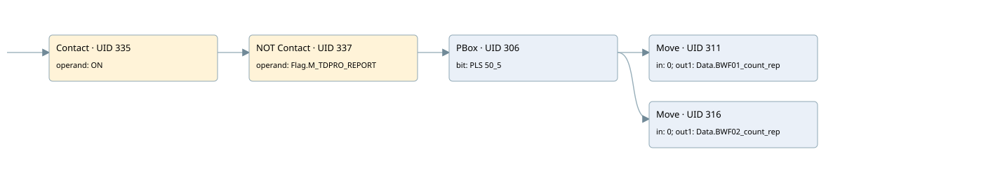

clear values of report at the end of the recording
allarm manager · 검색 색인 순서 9 · 원본 내부 NID 추정 7
백업 PLF 원본의 2647895 바이트 위치에서 복원한 XML. 검색 문서 935의 객체 키 161022007e0f000000000000와 연결했다. 이름 해석 7/7개. 남은 RefId는 상수 또는 미해석 참조다.
연결 구조 다시 그리기
원본 Part/PCon/Wire를 이용한 연결도다. TIA 화면의 래더 배치 또는 실행 결과를 재현한 그림은 아니다. 핀 연결은 아래 표와 원본 XML을 기준으로 읽는다. 노드 위에 마우스를 두면 피연산자 이름을 볼 수 있다.

접점·코일·블록과 피연산자
| Part UID | Gate | Negated 핀 | 연결 피연산자 |
|---|---|---|---|
| 335 | Contact | operand = ON | |
| 337 | Contact | operand | operand = Flag.M_TDPRO_REPORT |
| 306 | PBox | bit = PLS 50_5 | |
| 311 | Move | in = 0; out1 = Data.BWF01_count_rep | |
| 316 | Move | in = 0; out1 = Data.BWF02_count_rep |
접점 경로를 펼친 조건식
Contact·O/A·비교기의 원본 연결을 읽기 쉽게 펼친 보조 해석이다. POWER는 전원 레일 시작을 뜻한다. 호출 블록·에지·타이머의 내부 동작과 다중 쓰기 순서는 이 표로 실행 검증하지 않았다. 미해석 핀과 RefId는 원문 연결표에서 확인한다.
| UID | 동작 | 대상 | 원본 접점 경로 | 내용 |
|---|---|---|---|---|
| 311 | Move | Data.BWF01_count_rep | PBox UID 306.out (블록 동작 확인) | Move 입력 0 |
| 316 | Move | Data.BWF02_count_rep | PBox UID 306.out (블록 동작 확인) | Move 입력 0 |
원본 배선 연결
| Wire UID | 동일 Wire 연결 끝점 |
|---|---|
| 339 | Powerrail {} ↔ Part 335.in |
| 326 | ORef 319 (ON) ↔ Part 335.operand |
| 336 | Part 335.out ↔ Part 337.in |
| 327 | ORef 320 (Flag.M_TDPRO_REPORT) ↔ Part 337.operand |
| 338 | Part 337.out ↔ Part 306.in |
| 329 | ORef 321 (PLS 50_5) ↔ Part 306.bit |
| 334 | Part 306.out ↔ Part 311.en ↔ Part 316.en |
| 330 | ORef 322 (0) ↔ Part 311.in |
| 331 | Part 311.out1 ↔ ORef 323 (Data.BWF01_count_rep) |
| 332 | ORef 324 (0) ↔ Part 316.in |
| 333 | Part 316.out1 ↔ ORef 325 (Data.BWF02_count_rep) |
식별자 해석 근거 7개
| ORef UID | RefId | 이름 | IdentXmlPart 파일 | 해석 방법 |
|---|---|---|---|---|
| 319 | 46 | ON | 0567-IdentXmlPart.xml | UID/RID + search-text + NID agreement |
| 320 | 48 | Flag.M_TDPRO_REPORT | 0565-IdentXmlPart.xml | UID/RID + search-text + NID agreement |
| 321 | 50 | PLS 50_5 | 0567-IdentXmlPart.xml | UID/RID + search-text + NID agreement |
| 322 | 52 | 0 | 0566-IdentXmlPart.xml | literal candidate: UID/RID/NID + nearby named declarations + search-text agreement |
| 323 | 53 | Data.BWF01_count_rep | 0565-IdentXmlPart.xml | UID/RID + search-text + NID agreement |
| 324 | 52 | 0 | 0566-IdentXmlPart.xml | literal candidate: UID/RID/NID + nearby named declarations + search-text agreement |
| 325 | 55 | Data.BWF02_count_rep | 0565-IdentXmlPart.xml | UID/RID + search-text + NID agreement |
검색 코드 보조 자료
참조 명칭을 찾기 위한 자료이며 실행 순서나 AND/OR 관계는 위 연결표로 확인한다.
"on" "flag".m_tdpro_report "pls 50_5" move 0 move 0 "data".bwf02_count_rep "data".bwf01_count_rep